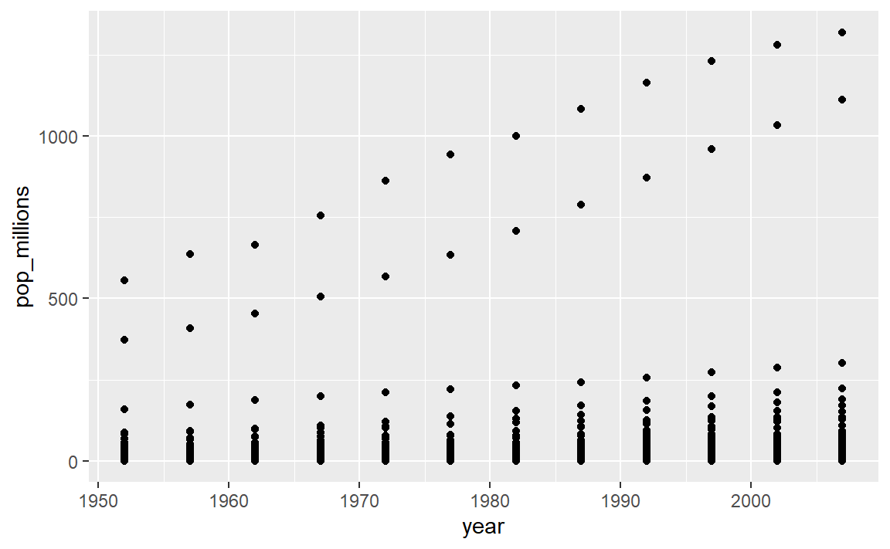
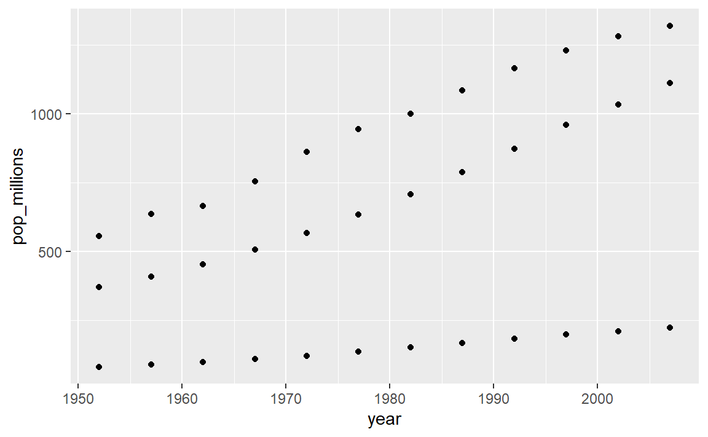

29 . 벡터화(Vectorization)
R 함수 대부분은 벡터화되었다. 즉, 한번에 각 요소에 대해 연산을 수행하도록 루프를 돌릴 필요없이 함수가 벡터 모든 요소에 대해 연산작업을 수행한다. 이렇게 되면 코드는 더욱 간결해지고, 가독성이 높아지고, 오류에 덜 노출된다.
x <- 1:4
x * 2## [1] 2 4 6 8곱하기는 벡터 모든 요소에 일어난다.
두 벡터를 더할 수도 있다:
y <- 6:9
x + y## [1] 7 9 11 13x 벡터 각 요소가 y 벡터 대응되는 요소에 더해진다:
x: 1 2 3 4
+ + + +
y: 6 7 8 9
---------------
7 9 11 1329.1 도전과제 1
gapminder 데이터셋 pop 칼럼에 벡터 연산을 시도해 본다.
gapminder 데이터프레임에 신규 칼럼을 생성하는데, 백만명 단위로
인구정보를 표현한다.
데이터프레임에 head 혹은 tail 명령어를 적용해서
실제로 제대로 동작하는지 확인한다.
도전과제 1에 대한 해답
gapminder데이터셋pop칼럼에 벡터 연산을 시도해 본다.gapminder데이터프레임에 신규 칼럼을 생성하는데, 백만명 단위로 인구정보를 표현한다. 데이터프레임에head혹은tail명령어를 적용해서 실제로 제대로 동작하는지 확인한다.gapminder$pop_millions <- gapminder$pop / 1e6 head(gapminder)## country year pop continent lifeExp gdpPercap pop_millions ## 1 Afghanistan 1952 8425333 Asia 28.8 779 8.43 ## 2 Afghanistan 1957 9240934 Asia 30.3 821 9.24 ## 3 Afghanistan 1962 10267083 Asia 32.0 853 10.27 ## 4 Afghanistan 1967 11537966 Asia 34.0 836 11.54 ## 5 Afghanistan 1972 13079460 Asia 36.1 740 13.08 ## 6 Afghanistan 1977 14880372 Asia 38.4 786 14.88
29.2 도전과제 2
그래프 하나에, 모든 국가에 대해 백만 단위로 인구를 연도별로 도식화한다. 어느 국가인지 식별하는 것은 신경쓰지 말자. 상기 연습문제를 반복하면서, 중국(China), 인도(India), 인도네시아(Indonesia)에 대해서만 도식화한다. 마찬가지로, 어는 국가인지 식별하는 것은 신경쓰지 말자.
도전과제 2에 대한 해답
연도별 백만단위로 인구수를 그래프로 표현한느데 앞서 학습한 내용을 상기한다.
ggplot(gapminder, aes(x = year, y = pop_millions)) + geom_point() countryset <- c("China","India","Indonesia") ggplot(gapminder[gapminder$country %in% countryset,], aes(x = year, y = pop_millions)) + geom_point()
비교 연산자, 논리 연산자, 그리고 많은 함수도 벡터화를 지원한다:
비교 연산자
x > 2## [1] FALSE FALSE TRUE TRUE논리 연산자
a <- x > 3 # or, for clarity, a <- (x > 3)
a## [1] FALSE FALSE FALSE TRUE꿀팁: 논리 벡터에 대한 유용한 일부 함수
any() 함수는 벡터 요소 어떤 것이든 TRUE 참이면, TRUE를 반환한다.
all()함수는 벡터 요소 모두가 TRUE 참이면, TRUE를 반환한다.
함수 대부분은 또한 벡터에 요소별(element-wise)로 연산작업을 수행한다:
함수(Functions)
x <- 1:4
log(x)## [1] 0.000 0.693 1.099 1.386벡터화 연산은 행렬(matrix)에 원소별로 연산작업을 수행한다:
m <- matrix(1:12, nrow=3, ncol=4)
m * -1## [,1] [,2] [,3] [,4]
## [1,] -1 -4 -7 -10
## [2,] -2 -5 -8 -11
## [3,] -3 -6 -9 -1229.3 도전과제 3
다음과 같은 행렬이 주어졌다:
m <- matrix(1:12, nrow=3, ncol=4)
m## [,1] [,2] [,3] [,4]
## [1,] 1 4 7 10
## [2,] 2 5 8 11
## [3,] 3 6 9 12다음 명령어를 실행하면, 연산작업 결과가 어떻게 될지 생각한 것을 적어본다:
m ^ -1m * c(1, 0, -1)m > c(0, 20)m * c(1, 0, -1, 2)
예상한 출력결과가 나왔나요? 만약 그렇지 않다면, 조교(helper)를 부르세요!
도전과제 3에 대한 해답
다음과 같은 행렬이 주어졌다:
m <- matrix(1:12, nrow=3, ncol=4) m## [,1] [,2] [,3] [,4] ## [1,] 1 4 7 10 ## [2,] 2 5 8 11 ## [3,] 3 6 9 12다음 명령어를 실행하면, 연산작업 결과가 어떻게 될지 생각한 것을 적어본다:
m ^ -1## [,1] [,2] [,3] [,4] ## [1,] 1.000 0.250 0.143 0.1000 ## [2,] 0.500 0.200 0.125 0.0909 ## [3,] 0.333 0.167 0.111 0.0833
m * c(1, 0, -1)## [,1] [,2] [,3] [,4] ## [1,] 1 4 7 10 ## [2,] 0 0 0 0 ## [3,] -3 -6 -9 -12
m > c(0, 20)## [,1] [,2] [,3] [,4] ## [1,] TRUE FALSE TRUE FALSE ## [2,] FALSE TRUE FALSE TRUE ## [3,] TRUE FALSE TRUE FALSE
29.4 도전과제 4
다음 연속된 분수 순열 합계를 구하는데 관심이 있다:
x = 1/(1^2) + 1/(2^2) + 1/(3^2) + ... + 1/(n^2)이 모두를 타이핑하는 것은 지루하고, n 값이 매우 큰 경우 불가능하다.
벡터화를 사용해서 n=100 일 때 x를 계산한다.
n=10,000 일 때, 합은 얼마나 될까?
도전과제 4에 대한 해답
다음 연속된 분수 순열 합계를 구하는데 관심이 있다:
x = 1/(1^2) + 1/(2^2) + 1/(3^2) + ... + 1/(n^2)이 모두를 타이핑하는 것은 지루하고,
n값이 매우 큰 경우 불가능하다. 벡터화를 사용해서n=100 일 때x를 계산한다.n=10,000 일 때, 합은 얼마나 될까?sum(1/(1:100)^2)## [1] 1.63sum(1/(1:1e04)^2)## [1] 1.64n <- 10000 sum(1/(1:n)^2)## [1] 1.64함수를 사용해서 동일한 결과를 얻을 수도 있다:
inverse_sum_of_squares <- function(n) { sum(1/(1:n)^2) } inverse_sum_of_squares(100)## [1] 1.63inverse_sum_of_squares(10000)## [1] 1.64n <- 10000 inverse_sum_of_squares(n)## [1] 1.64